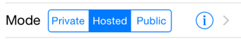
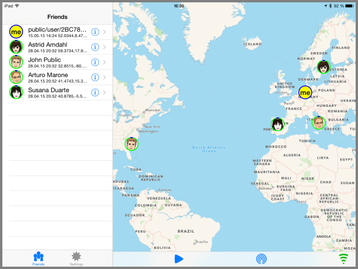

Scenarios
There are three basic scenarios we have for you depending on your needs. It'll help if you keep a copy of the technical terminology handy.

Public
The very first time you install OwnTracks it will be configured in public mode, and you'll be warned about this when you launch the app. In this mode, the app "just works". It connects to our public MQTT broker, and your location is published there anonymously. In the app you'll also see any other public users, although you won't be able to identify them (nor they you): there are, other than the location data, no personal details of any user. The one exception is a couple of pseudo-users we publish magically so that you have something nice to look at.

We mentioned earlier that this is not a mode in which you want to run OwnTracks; it's basically just a demonstration mode for you to get a feeling for how OwnTracks looks and works. The data published by OwnTracks in this mode is not retained, and we don't store it.
Using Public mode means you don't have to learn about MQTT brokers, topics, and all the rest of the stuff, but the downside is that you don't get to use any of the neat features Hosted or Private mode come with. For example, you can't set up friends or configure clients to use your data for the sole reason that we don't tell you the address or the authentication credentials for Public mode. Yep, it's as they say: you get what you pay for. :-)
Honestly, and kidding aside, we really do recommend you switch away from Public mode to either Hosted or, better yet, Private mode as soon as possible.
We think it's best you forget about this as quickly as possible and chose one of the other modes.
Hosted
If you don't want to go to the trouble of hosting your own setup, you can use our hosted mode. We provide an MQTT broker for you to use with OwnTracks, and we do so on a best-effort basis. No guarantees whatsoever as to availability, but our track record is pretty good so far.
The first thing you do in order to use Hosted mode is to sign up at OwnTracks Hosted where you create an account providing a username, a password, a valid e-mail address for yourself, and your name. Simultaneously you specify a name for the device you'll be connecting, something like samsung3, nexus5, iphone5, etc. -- you get the idea.
You may, of course, register more than just one device.

The password is solely for accessing the Hosted Web site and for nothing else; you will use it there only.
Upon registering a device, you are shown an access token. This jumble of letters and numbers is case-sensitive and is displayed once only, so write it down somewhere; later this is replaced by a padlock symbol. (But no worries: if you misplace it, you can generate a new access token. And no: we cannot tell you what the token was.)
In order to use our MQTT broker you will specify these three bits in OwnTracks: the username, the device, and the access token.
Just in case you're curious: we store neither the Web site password you created, nor any of the access tokens in clear of course; that would be stupid. What we do is we hash them securely and store [PBKDF2] strings. When either you login to our Web site, or your device authenticates to our MQTT broker with the access token, we take the values you connect with, hash them again, and test whether the PBKDF2 we have on record matches what we computed. If it does, you, respectively your device, are in. (And guess what happens if it doesn't match?)
Detailed instructions for setting up Hosted mode are available.
You will now want to configure a client with which you consume the data which is published by OwnTracks, or if you're feeling very brave, why not write your own client?
Private
This is where you say adios! (or whatever you say in your language when you leave) to us, continue to use our app (still free of charge of course -- it's Open Source), and host everything yourself. And to be honest, that's precisely what we think you should do so that you only (and the people you authorize) see where you are. That is the Own in OwnTracks: it's your own data and you only should see it.
In private mode you're on your own: you set up and configure your MQTT broker, you configure authentication, and then you configure your OwnTracks apps to connect to your broker. It's not particularly difficult to do, and you have full control over everything you set up.
What you basically have to do is to
- set up an MQTT broker
- Optionally use existing clients to consume OwnTracks data
- Possibly dig in and write your own client and do really cool stuff!
We urge you to resist the temptation of using private mode with one of the many public brokers hosted by different organizations. While it is an easy way out (though not easier than our hosted mode we think) those brokers are publically accessible which means anybody can see where you are if they can identify you. Furthermore, public brokers often don't implement access control, so basically anybody can create a "location" update which looks as though it may be yours. Believe us: it'll drive you crazy.
If you need assistance, we may be able to help you on our Community site.
Now it's time to discuss topics.